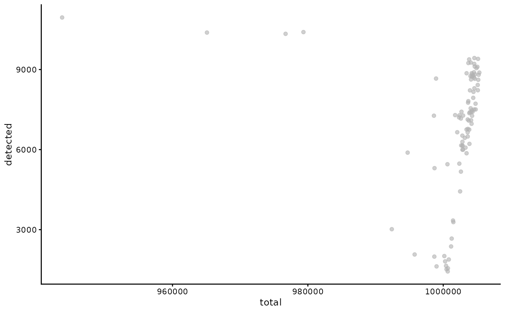

Interoptability between MAST and SingleCellExperiment-derived packages.
Andrew McDavid
2018-10-26
Source:vignettes/MAST-interoperability.Rmd
MAST-interoperability.RmdIntroduction
As a SingleCellExperiment-derived package, MAST can easily be inserted into workflows with packages such as scran, scater, zinbwave, SCnorm and others. The main gotcha is packages that assume integer counts vs log-transformed, or log-transformed, approximately scale-normalized data. We find that MAST performs best with log-transformed, scale-normalized data that has been thresholded, such as \(\log_2(\text{transcripts per million} + 1)\).
We address this by:
- testing for log-like data for objects constructed in MAST
- explicitly naming the slot of the
assaycontaining such putatively log-like data - by default operating on the slot with such log-like data
In objects that were constructed in other packages, we …
In what follows, we show an example of using scater to plot some QC metrics, SCnorm to normalize data, and, and conversion to a Seurat object.
From MAST to Scater
Scater (citation) is a package that …
## Loading required package: SingleCellExperiment## Loading required package: SummarizedExperiment## Loading required package: GenomicRanges## Loading required package: stats4## Loading required package: BiocGenerics## Loading required package: parallel##
## Attaching package: 'BiocGenerics'## The following objects are masked from 'package:parallel':
##
## clusterApply, clusterApplyLB, clusterCall, clusterEvalQ,
## clusterExport, clusterMap, parApply, parCapply, parLapply,
## parLapplyLB, parRapply, parSapply, parSapplyLB## The following objects are masked from 'package:stats':
##
## IQR, mad, sd, var, xtabs## The following objects are masked from 'package:base':
##
## anyDuplicated, append, as.data.frame, basename, cbind,
## colMeans, colnames, colSums, dirname, do.call, duplicated,
## eval, evalq, Filter, Find, get, grep, grepl, intersect,
## is.unsorted, lapply, Map, mapply, match, mget, order, paste,
## pmax, pmax.int, pmin, pmin.int, Position, rank, rbind, Reduce,
## rowMeans, rownames, rowSums, sapply, setdiff, sort, table,
## tapply, union, unique, unsplit, which, which.max, which.min## Loading required package: S4Vectors##
## Attaching package: 'S4Vectors'## The following object is masked from 'package:base':
##
## expand.grid## Loading required package: IRanges## Loading required package: GenomeInfoDb## Loading required package: Biobase## Welcome to Bioconductor
##
## Vignettes contain introductory material; view with
## 'browseVignettes()'. To cite Bioconductor, see
## 'citation("Biobase")', and for packages 'citation("pkgname")'.## Loading required package: DelayedArray## Loading required package: matrixStats##
## Attaching package: 'matrixStats'## The following objects are masked from 'package:Biobase':
##
## anyMissing, rowMedians## Loading required package: BiocParallel##
## Attaching package: 'DelayedArray'## The following objects are masked from 'package:matrixStats':
##
## colMaxs, colMins, colRanges, rowMaxs, rowMins, rowRanges## The following objects are masked from 'package:base':
##
## aperm, apply## Registered S3 methods overwritten by 'ggplot2':
## method from
## [.quosures rlang
## c.quosures rlang
## print.quosures rlang## Registered S3 method overwritten by 'dplyr':
## method from
## as.data.frame.tbl_df tibble##
## Attaching package: 'MAST'## The following object is masked from 'package:stats':
##
## filterknitr::opts_chunk$set(message = FALSE,error = FALSE,warning = FALSE)
data(maits, package='MAST')
unlog <- function(x) ceiling(2^x - 1)
sca_raw = FromMatrix(t(maits$expressionmat), maits$cdat, maits$fdat)## Assuming data assay in position 1, with name et is log-transformed.Here we make an object with assays counts and et. By default, MAST will operate on the et assay, but scran wants count-like data for some of its QC. The et data are log2 + 1 transcripts per million (TPM), as output by RSEM.
We could specify the assay name at creation with sca_raw = FromMatrix(list(logTPM = t(maits$expressionmat)), maits$cdat, maits$fdat) or rename an object that contains appropriately transformed data with assayNames(sca_raw) = c('logTPM', 'counts').
Before calling scater functionality, you might pause to consider if some features should belong in special control sets, such as mitochrondial genes, or spike-ins.
library(scater)
sca_raw = calculateQCMetrics(sca_raw)
plotRowData(sca_raw, x = 'log10_mean_counts', 'pct_dropout_by_counts')

Evidently some features were filtered, so not all cells contain 1 million counts. We can tell these were rare features based on the inverse relationship between total_counts and total_features_by_counts: the most complex libraries (with the greatest numer of features) are missing the most counts.
sca_raw <- runPCA(sca_raw, ncomponents=5, exprs_values = 'et')
plotReducedDim(sca_raw, use_dimred = 'PCA', colour_by = 'condition') We can also run a PCA.
We can also run a PCA.